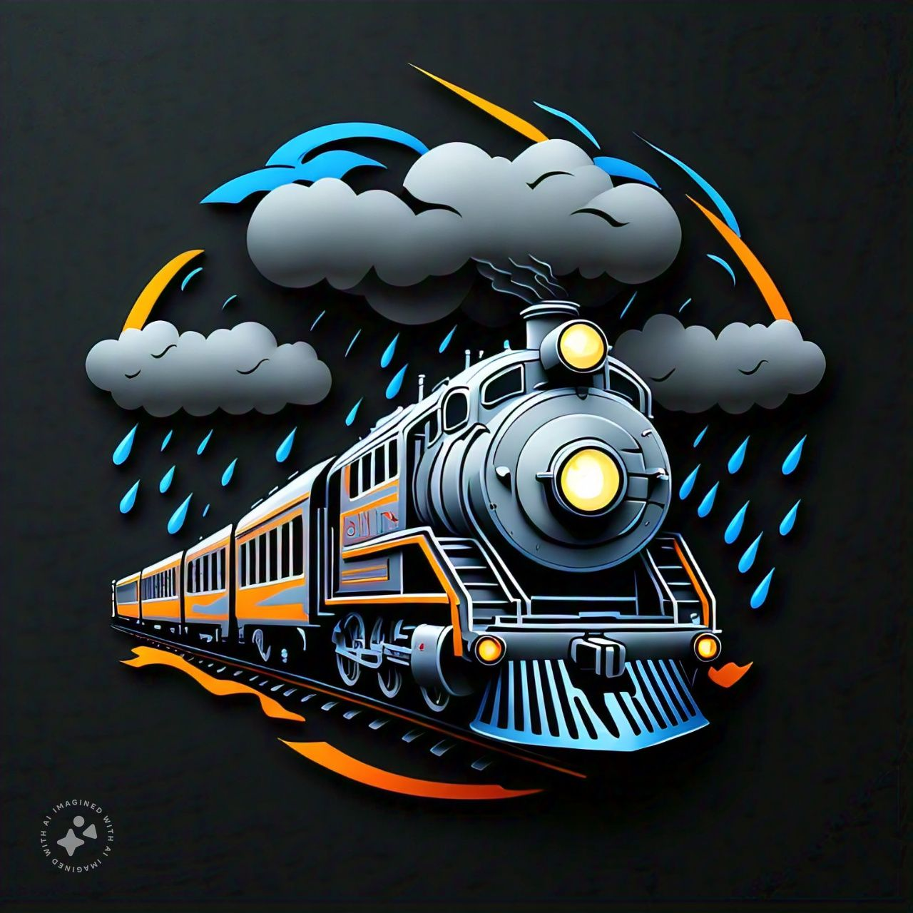

Meal Minder
MealMinder is a groundbreaking website that redefines the way individuals approach their nutrition and overall well-being. At its core, it offers a comprehensive, calendar-based meal planner
View Project GitHub

Track and Forecast
Real-time train delay prediction system using APIs and weather data.
View Project GitHubSmart Pollution Control
IoT-based solution for monitoring and managing pollution levels in urban areas.
View Project GitHub